Откройте город для жизни, а не для машин
Прокатитесь на велосипеде по самым тихим улицам и зелёным местам Москвы и посмотрите на город под новым углом
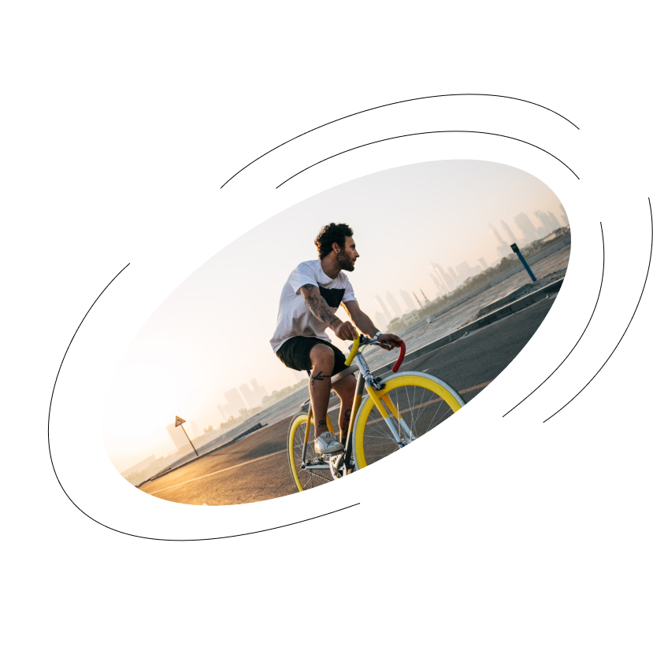
Мы знаем толк в велопрогулках
Спланировали веломаршруты и учли все что может сделать велопрогулки удобными, интересными и полезными лично вамЗелёные маршруты
Развеиваем миф,
что Москва это город для авто, у нас только зелёные маршруты
и тихие улицы

Бесплатные поездки
Заплатить можете только за аудиогид
и прокат велосипеда, если сами захотите

Легко найти парковку
В начале и в конце пути сразу несколько стоянок и парковок для велосипедов.
Место точно найдётся

Классный аудиогид
Записали его вместе с топовыми инфлюэнсерами.
О Москве они знают всё

Составили самые интересные
маршруты, чтобы вы отдохнули от городской суеты
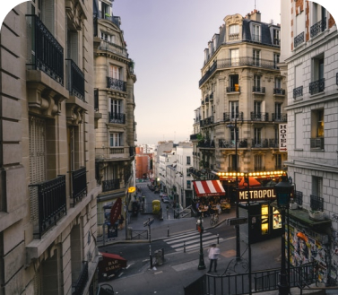
Парк культуры
Один день в Хамовниках
10 км
2 часа
Сложный маршрут
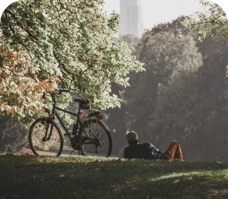
Строгино
Наперегонки с ветром:
Серебряный бор и обводной канал
10 км
2 часа
Сложный маршрут
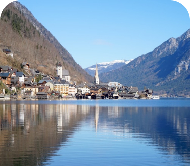
ВДНХ
Север помнит:
Ботанический сад и ВДНХ
10 км
2 часа
Сложный маршрут
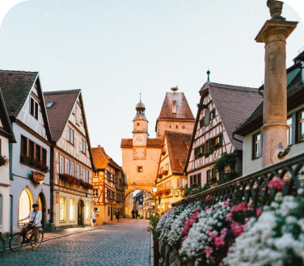
Тверская
Москва - большая деревня:Царицино
10 км
2 часа
Сложный маршрут
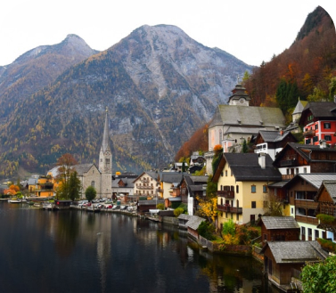
ВДНХ
Европейский городок
10 км
2 часа
Сложный маршрут
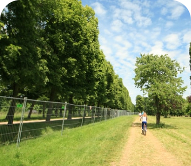
Шаболовская
Зелёные кроны столицы
10 км
2 часа
Сложный маршрут
"
Сделали маршруты бесплатными потому что не мы их придумали.
Мы просто оптимизировали и собрали, чтобы кататься было удобнее. Но если вы захотите нас поддержать, то есть аудиогиды, мы их записали с блогерами и москваведами.
Получилось классно.
Руководитель Around
Ольга Стравицкая
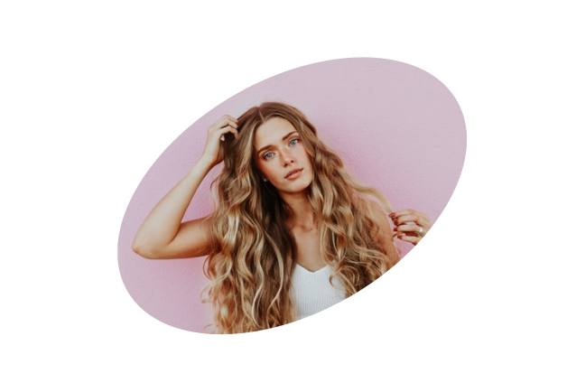
Другая Москва
Мы хотим дать взглянуть на Москву под новым углом. У нас вы
не найдёте банальных маршрутов и открыточных видов. Каждый из них мы создавали специально, чтобы вы смогли открыть для себя новое о городе
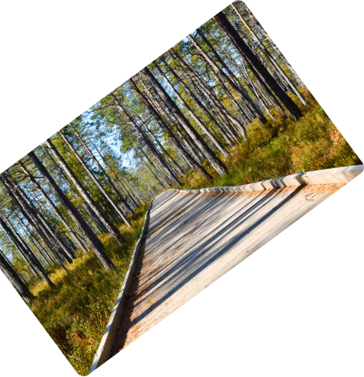
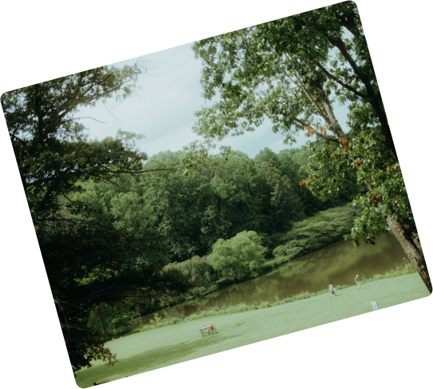


Маршруты построены так, чтобы кататься было удобно, комфортно и безопасно. Мы используем велоимфраструктуру города
и предлагаем только те маршруты, которые проходят
по велодорожкам на тихих и в парках. Парковки есть везде,
мы проверили

Город — это не только архитектура и пейзажи, но и культурная жизнь. Наши маршруты спланированы так, чтобы вы могли посетить самые интересные площадки, а в конце маршрута всегда можно отдохнуть
и перекусить. Гастрономическая жизнь города тоже
не пройдёт мимо
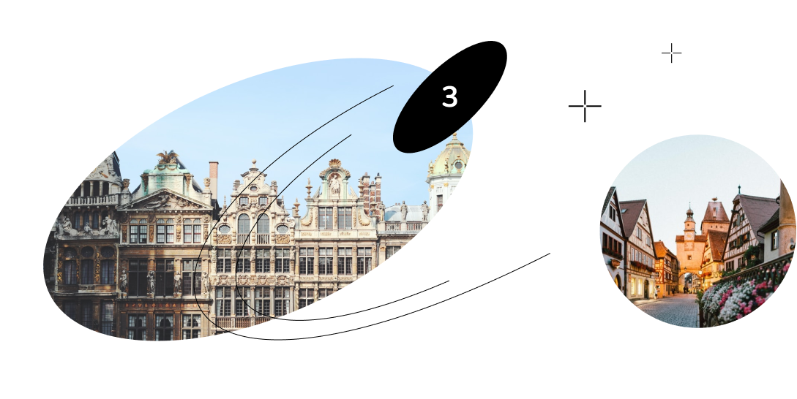
Если нет велосипеда - это не страшно. Представляем вам Велобайк
23
Точек проката велосипедов
Велобайк есть в Москве
65
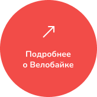
Запас прочности
Даже естли вы решили устроить заезд
по Воробьевым горам, Велобайк справится: рамы велосипедов расчитаны на 150 кг
Безопасность
Мы думаем о безопасности и в бордачок велосипеда положили антисептик, чтобы вы могли протереть руки. Это не обязательно, но мы советуем
Электровелосипеды
Для ленивых воскресных прогулок советуем брать электровелосипеды
Как пользоваться прокатом Велобайк?

Зарегистрируйтесь на сайте Велобайка и оплатите доступ
Регистрация займет
5 минут. Нужны только смартфон и карточка
Возьмите велосипед в точке проката
Доступные велосипеды можно посмотреть
на карте онлайн или
в приложении
Катайтесь
А где найти классные маршруты вы уже знаете
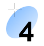
Верните велосипед
Вставьте велосипед
в свободный порт
и дождитесь уведомления о завершении проката
Частые вопросы
1
Есть ли какие-то ограничения для использования велосипеда из проката?
2
Получается, я могу проехать по маршруту совсем бесплатно? А в чём подвох?
Подвоха нет, информация о маршрутах бесплатная и по ним может проехаться любой желающий. Мы не создали ничего нового, а просто собрали самые классные маршруты Москвы в одном месте.
Но если хотите нас отблагодарить, вы всегда можете купить аудиогид. Мы их записали с топовыми блогерами и инфлюэнсерами при поддержке опытных москвоведов
3
А я могу проехать по маршруту на своём велосипеде или надо обязательно брать в прокате?
4
Как подключить аудиогид? Могу ли я подделиться им с друзьями?
5
Что делать, если на середине маршрута у меня сломался велосипед?
Еженедельная рассылка:
новые маршруты одним письмом